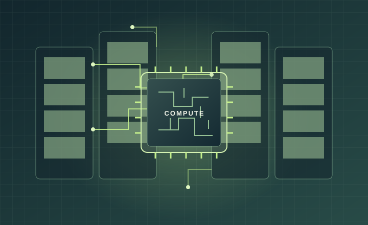
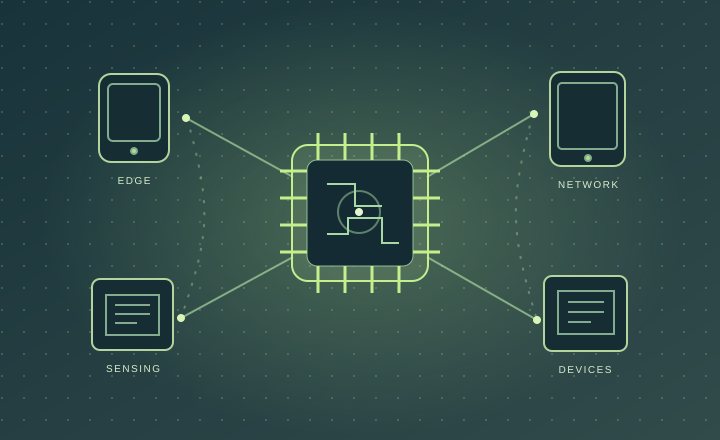
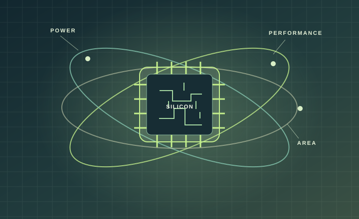

Physical design
Block and SoC implementation with attention to congestion, design rules, and handoff.
- Floorplanning
- Power planning
- Placement
- CTS
- Routing
PHYSICAL DESIGN ENGINEER / INTEL
I work at the intersection of physical design, timing closure, and methodology—helping IP and SoC teams make implementation flows more robust and efficient.
01 / ABOUT

I’m a physical design methodology engineer at Intel with 5+ years of experience across block-level implementation, full-chip STA, physical verification, and SoC design.
My work spans the implementation journey—from floorplanning and placement through clock-tree synthesis, routing, timing analysis, and physical checks. I’m especially interested in the methods and automation that make those flows more robust, reusable, and easier for teams to improve.
I’ve worked across 3nm, 5nm, and 7nm TSMC technologies and Intel process nodes, and earned my M.S. in Electrical Engineering from San José State University.
02 / EXPERTISE
Implementation, analysis, and automation—connected across the design cycle.
Block and SoC implementation with attention to congestion, design rules, and handoff.
Finding and resolving timing issues while accounting for variation and signal effects.
Improving RTL-to-GDS flows through regression, reusable methods, and practical automation.
Checking implementation quality and resolving physical design issues before handoff.
03 / SILICON IN THE WORLD
A wider lens on the systems modern silicon helps make possible—and the engineering trade-offs behind them.

01 / COMPUTE
Dense compute makes demanding workloads possible. Timing, congestion, and power remain real implementation constraints as designs scale.

02 / CONNECTIVITY
Processors, sensors, and network hardware bring computing into everyday products, linking small devices to larger systems.

03 / EFFICIENCY
Area, power, and performance choices influence thermal limits and the amount of useful compute a system can deliver.
THE ENGINEERING LENS Physical design turns a logical design into a manufacturable layout, balancing timing, power, area, and implementation quality.
04 / PROJECTS
Selected projects from professional implementation work, university, and ASIC training.
Handled physical implementation across two block-level partitions of approximately 3.6M and 500K transistors, with a 2GHz operating target, through place-and-route and tapeout work.
Worked through repeated timing and signoff iterations on an approximately 3.3M-transistor block at 1.8GHz, including ECOs and physical verification. Also supported full-chip timing calibration across RTL, P&R, and methodology teams.
Managed floorplan and manual-placement iterations for a complex block of approximately 4.6M gates and 30 macros, working across QoR, congestion, timing, IR, DRC/LVS, and ECO closure.
Evaluated Synopsys DSO.ai on a complex block, exploring ML-driven PPA and QoR trade-offs alongside timing, design-rule, and physical-verification considerations.
Designed a multiplier-efficient FIR filter for IQ signals. Targeted a 300MHz clock and achieved a three-cycle filter operation at a 100MHz sample rate, with 8.24 fixed-point output using Synopsys DesignWare and PrimeTime.
Designed a five-stage pipeline for instruction execution and implemented the RISC processor RTL in Verilog HDL, then simulated the design in ModelSim.
Built and compared KNN, logistic regression, decision tree, and random forest classification models, using feature selection and data analysis to evaluate predictive-maintenance results.
Worked on an Advanced Encryption Standard project during ASIC physical-design and verification training, applying implementation and physical-check fundamentals.
05 / DESIGN NOTES
A space for short walkthroughs, visualizations, and practical lessons from the implementation flow.
Show how utilization, macros, and blockages shape a block before detailed implementation.
A 44-second animated lesson on sampling edges, timing windows, slack, clock skew, and common repairs.
Break down routing challenges, DRC cleanup, parasitics, and the final implementation checks.
DESIGN NOTES The timing slot now includes a setup-and-hold lesson. Pick a file to preview a different clip locally; follow the guide in videos/ to publish more lessons with the site.
06 / EXPERIENCE
From physical design implementation to methodology and flow improvement.
Intel Corporation · Methodology
Developing tools, flows, and methods for physical design across IP and SoC implementations. Focused on stronger RTL-to-GDS flows, regression, automation, and improvements to power, performance, area, and timing.
Intel Corporation
Evaluated Synopsys DSO.ai on a complex block for PPA and QoR trade-offs, supporting timing closure and physical verification. Also worked on ERC fixes, timing arcs, full-chip STA, and IR/RV checks for an Intel FPGA project.
San José State University
Supported the continuous and discrete-time systems lab, using MATLAB, LTspice, and IPython to work through circuits and systems problems.
Intel Corporation
Implemented 3nm SoC partitions targeting 2GHz and supported timing closure on a 5nm, 1.8GHz block. Led full-chip timing calibration across RTL, P&R, and methodology teams, and automated reporting with Tcl.
Recognized multiple times for exceeding deliverables and expectations.
LakshSemi
Led floorplan iterations for a 4.6M-gate block with 30 macros, and supported timing, IR/RV, DRC/LVS, and ECO closure across 10nm and 7nm projects. Also handled a 90K-instance partition targeting 1GHz.
Entuple Technology
Trained in ASIC physical design and verification, including a 45nm Advanced Encryption Standard (AES) project.
07 / EDUCATION
San José State University · 2022–2024
GPA 3.5 / 4.0 · VLSI · CADMLR Institute of Technology · Jawaharlal Nehru Technological University, Hyderabad · 2014–2018
GPA 3.5 / 4.0 · Best Alumni Award, 201808 / GET IN TOUCH
For conversations about physical design, methodology, or SoC implementation, find me on LinkedIn.